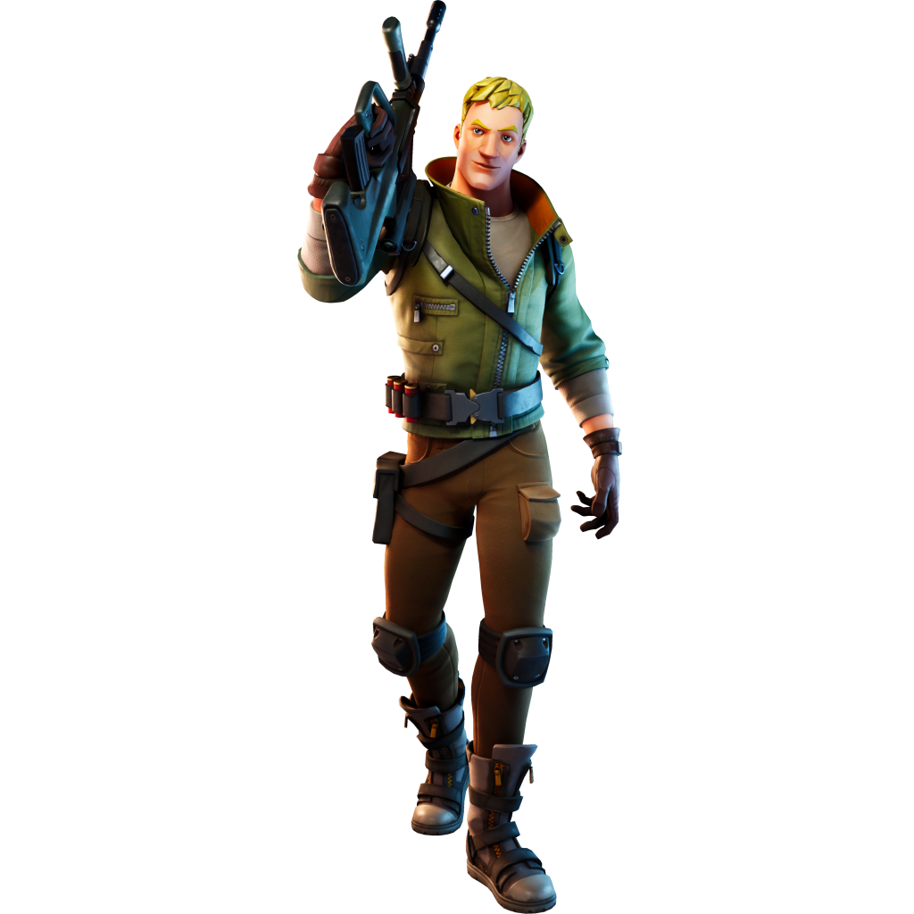
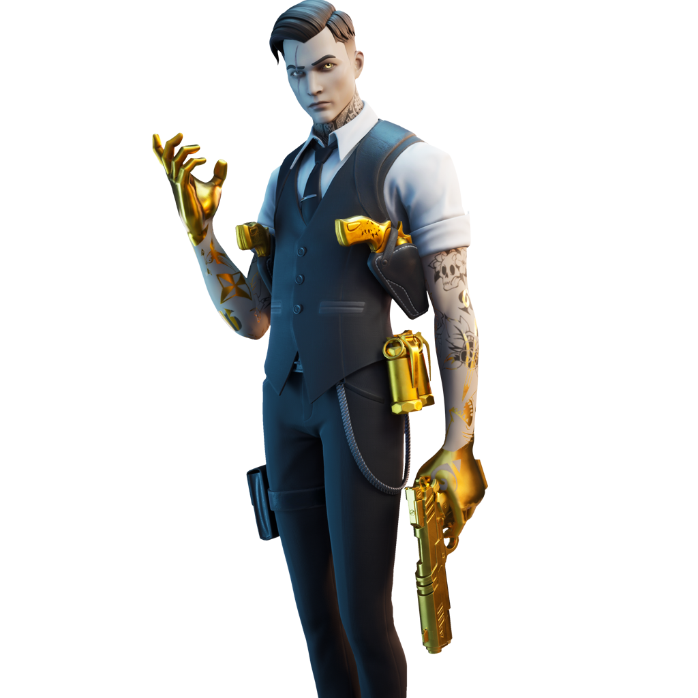
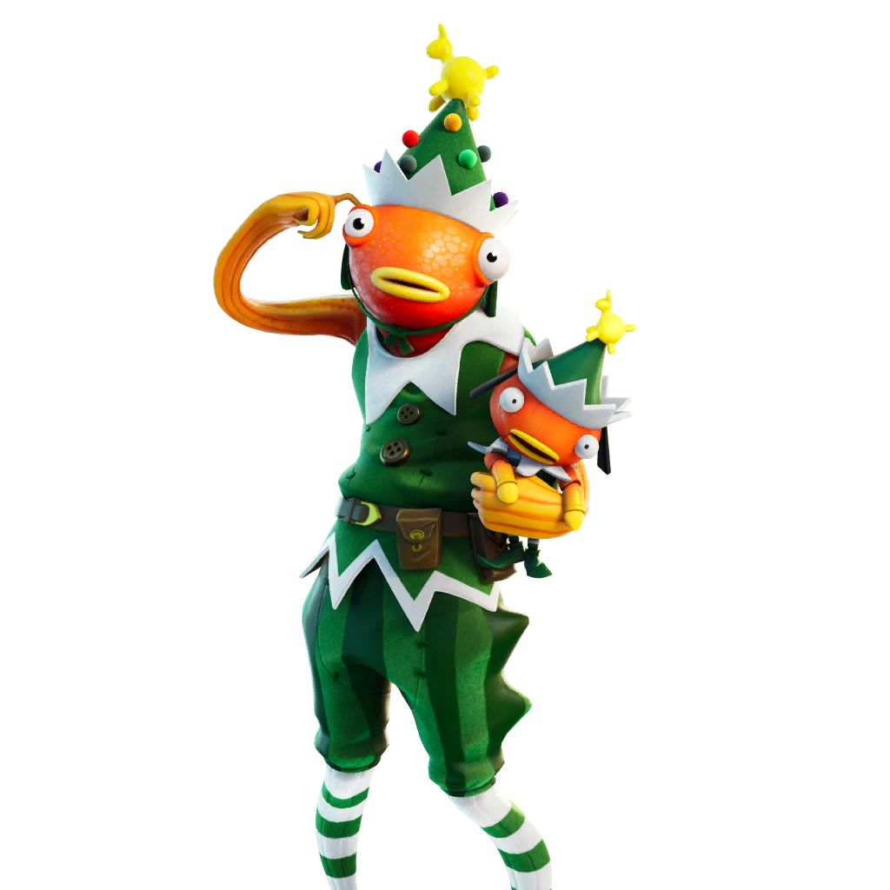

Jonesy
Jonesy é um dos personagens mais conhecidos do universo de Fortnite.

Jonesy é um dos personagens mais conhecidos do universo de Fortnite.

Midas é um personagem importante na história do jogo e ficou conhecido por sua habilidade relacionada ao ouro.

Peixoto é um personagem de aparência divertida que ganhou bastante popularidade entre os jogadores.
